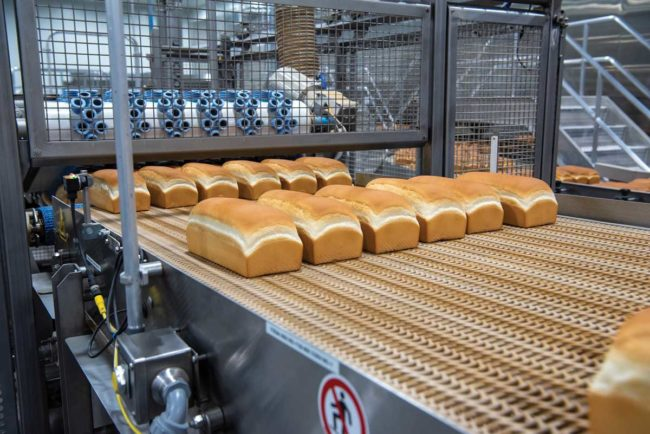
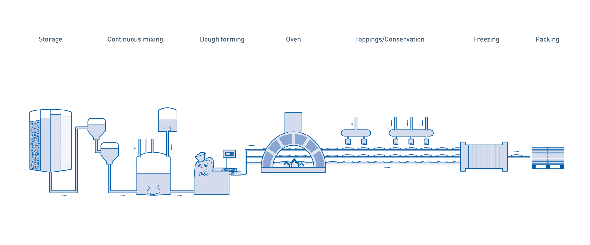

Contextualização
O pão é um elemento fundamental da dieta humana desde o período neolítico, os primeiros indícios da sua produção efetiva por uma civilização humana datam de 12.000 anos atrás, no Egito.
[!] "Pão é um elemento fundamental da sociedadede humana, o cotrole da sua produção e distribuição está diretamente relacionado as influências politícas exercidas durante pelo menos os últimos 2.000 anos."

Os Componentes fundamentais de qualquer pão são água, farinha de trigo e sal, ocasionalmente o pão é feito de outros cereais além do trigo e recebe o nome desse cereal. Além da água e da farinha, o pão passa por um processo de fermentação por leveduras. Também são usados alguns outros ingredientes para pães especificos, como laticínios, emulsionantes e gorduras.
[!] "O é definido como o produto perecível que resulta do cozimento de uma massa obtida pela mistura de farinha de O pão é definido como o produto perecível que resulta do cozimento de uma massa obtida pela mistura de farinha de trigo, sal comestível e água potável, fermentada por espécies de microrganismos próprios da fermentação do pão."

Durante o processo de fermentação, o açúcar da farinha é convertido em humidade e CO2, e o sal é adicionado para fortalecer o glúten e reforçar a fermentação dentro da massa. Nos processos industriais de produção, ocorre a adição de emulsificantes para fortalecer a massa para que eles consigam ser manuseados pelo maquinário.
[!] "O pão é um tipo diferente de comida quando comparado a outros tipos de alimentos por ser um produto levedado obtido da fermentação do açúcar liberado do amido da farinha de trigo pela atuação das enzimas da própria farinha. A fermentação é causada pelo fermento biológico, nome comercial para o organismo Saccharomuces cerevisiae. Por conta da fermentação açúcar é convertido em umidade e CO2."

A indústria de panificação passou por uma revolução nos últimos 150 anos, com a substituição de padarias artesanais por uma indústria de panificação de alta tecnologia. A produtividade tornou-se a chave do sucesso, com o desenvolvimento de diferentes tecnologias de panificação para atender às novas demandas do mercado. Novos materiais e ingredientes foram introduzidos na composição do pão, enquanto a pesquisa gerou um progresso constante na fabricação do pão. Com a introdução da automação na indústria de panificação, o primeiro passo da fermentação foi reduzido ou mesmo excluído. No final dos anos 90, a tecnologia do melhorador foi introduzida para a produção de massa congelada pré-fermentada. Como o pão fresco tem uma vida útil curta, técnicas como congelamento da massa foram analisadas para melhorar a conservação dos produtos de padaria.
